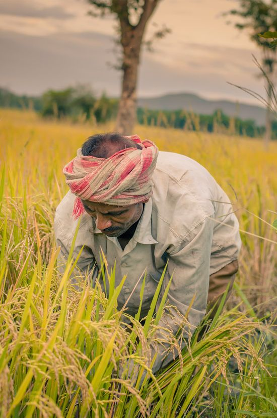
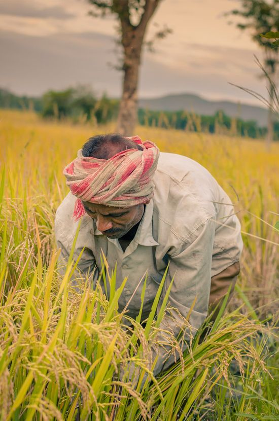

Our farmers life style in M.Agraharam, Maddikera (Mandal), Kurnool (Dist) - 518385
Farmers in villages play a crucial role in feeding the nation. They wake up early in the morning and work hard in their fields to grow crops like rice, wheat, vegetables, and fruits. Their daily life is filled with activities such as plowing, sowing seeds, watering the fields, and harvesting.
Most village farmers depend on rain and rivers for irrigation, while some use wells and tube wells. They also take care of animals like cows, buffaloes, and goats, which provide milk and help in farming.
Despite their hard work, farmers often face challenges such as unpredictable weather, pests, and low prices for their crops. However, modern technology, better seeds, and government support are helping them improve their farming methods and earn a better income.
Farming is not just a job for village farmers; it is their way of life. They celebrate festivals related to agriculture, such as Pongal, Baisakhi, and Makar Sankranti, to express gratitude for a good harvest. Their contribution to society is invaluable, as they ensure food security for everyone.


 
